O nosso dia:
Antes**“Antes de qualquer coisa, eu quero que você leia isso com calma. Não escrevo pra pressionar, nem pra cobrar nada. Escrevo porque você fala, some, bloqueia… e eu fico sem direito de resposta. E ficar em silêncio quando algo é importante não é do meu jeito. Então, por respeito ao que fomos — e ao que ainda existe aí dentro, mesmo que você não admita — eu só quero deixar claro o que eu realmente penso. Sem briga, sem cobrança, sem disputa. Apenas a verdade de alguém que aprendeu a se expressar com maturidade.”**
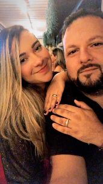
Aqui uma certeza estava invandindo meu peito... era você
Em primeiro lugar, devo dizer que quando eu quis te ver para falar dos sentimentos... na verdade, eu queria te ver para saber como que você estava, não queria me declarar... eu queria encontrar aquela Nadjeshda que estava conversando comigo no WhatsApp... prática, direta, sem emoção... mas eu não encontrei ela... encontrei uma Nadjeschda emotiva, com o coração aberto e com brilho no olhar... diferente das fotos do Instagram, diferente das últimas conversas... mas eu vou te falar algumas coisas...
Quando começamos a conversar depois de um mês sem nenhuma notícia sua... e depois ver a notícia de que você iria se casar, estava me deixando ciente de que eu estava certo em te esquecer... mas quando eu comentei no seu status que tive o prazer de conhecer aquela versão doce e delicada sua, a primeira reação sua foi dizer que eu estava lindo no show... você normalmente me diria bonito ou algo mais simples... quando falei que queria te ver pessoalmente, você não hesitou em me encontrar no seu horário de almoço...
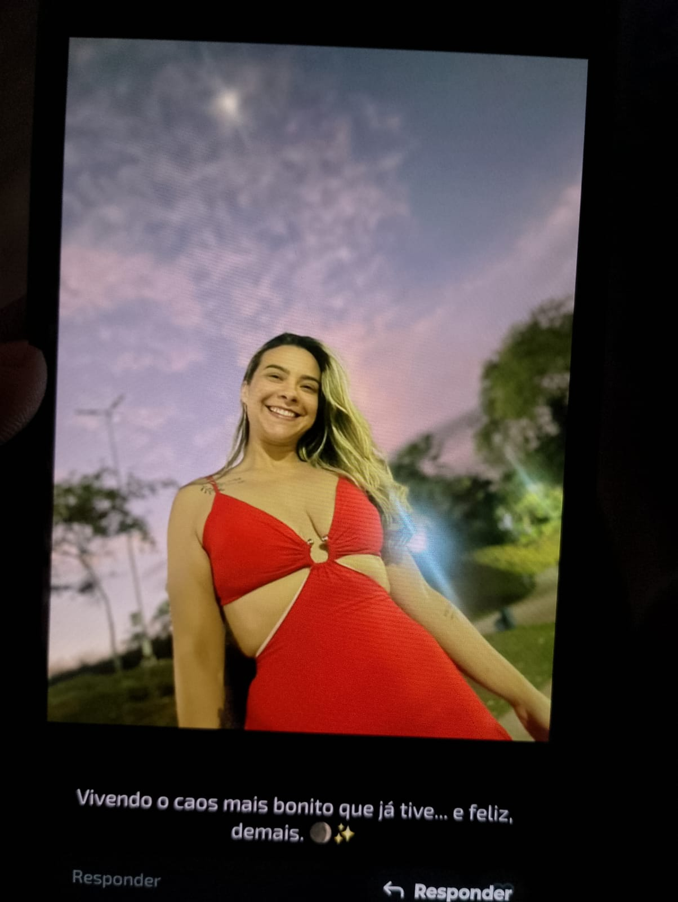
um sorriso em meio ao caos que me convencia que o certo era te esquecer
...admito que o que eu iria te dizer era algo totalmente diferente... eu não iria me declarar, eu queria ver como você estava, já que nas suas fotos de Insta e status eu não via mais o brilho no seu olhar, aquele jardim de girassóis que sempre brilham com o amanhecer... pelo contrário, era um sorriso triste, trancado, estressado...
...quando marquei de te buscar para o sushi... encontrei uma menina que estava com o escudo baixo, os portões abertos, o sorriso frouxo... e isso me despertou uma vontade para ver até onde esse sorriso nos levaria.
Você não me olhava mais com aquele olhar de indiferença ou desgosto... quando deixei você no carro e desliguei tudo e soltei o cinto... você sentiu o coração acelerar... você queria me dar aquele beijo... mas quando eu gritei dizendo que você ia ser minha, só para eu ver esse sorriso lindo ao meu lado todos os dias, você gostou....
Você mudou, na sua vida que você achava que estava fazendo algo errado, de repente aceitar meu convite, aceitar sair comigo era o certo e talvez aceitar o beijo também, mas achou melhor passar.
Eu não duvido o que você sente, não entendo na verdade porque não é comigo, mas o que você tem hoje não é amor e você sabe, você não teria dúvidas depois de 4 meses já passados te abalarem assim.
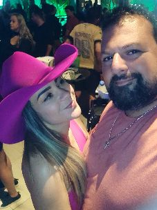
O olhar que montra cumplicidade entre nós...
Você se conhece e eu te conheço, você iria se abalar assim? Se já não houvesse dúvidas no que você anda fazendo? Não vou pontuar pontos negativos no seu relacionamento, até porque isso não condiz a mim, mas você sabe que entre nós existiam e existem mais positivos que negativos.
Em momento algum você me deu esperança, pelo contrário, você sempre foi incisiva em dizer que estava em um relacionamento, porém quando você conversava comigo você não estava me dando esperanças e sim vendo uma esperança para a gente.
Quando voltamos a conversar após esse tempo, quando paramos de ser funcionais e fomos nós mesmos nas conversas, você também percebeu que aquilo te faz falta, alguém que você pode falar de tudo sobre tudo e que ele nunca irá te julgar, apenas te apoiar e dizer que segurará sua mão até o fim... das brincadeiras até as cantadas, você sentia falta... mas vamos voltar um pouco, eu quero te mostrar algumas coisas.
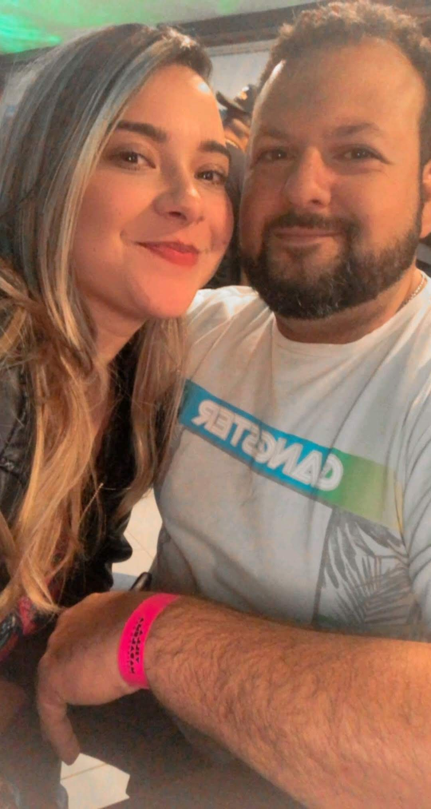
Sair com você era a certeza do melhor dueto da minha vida...(1/4)
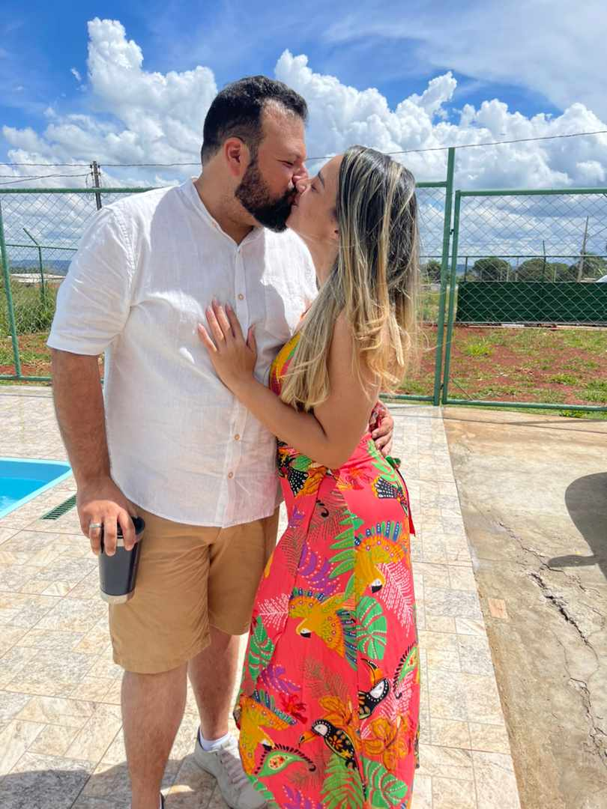
Um sorriso que fez nascer o meu sorriso(2/4
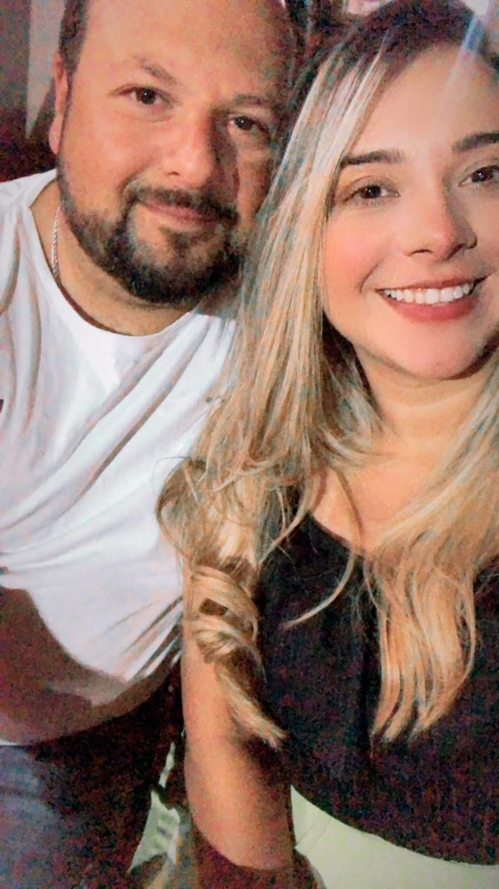
comemorações se toranaram rotinas e você me ensinou a comemorar as coisas boas da vida(3/4)
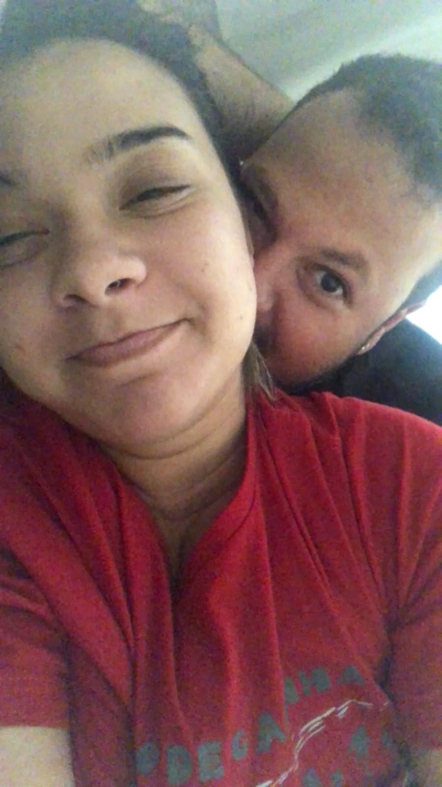
Meus melhores presentes, Você.. uma cesta.. e uma cuscuzeira( que eu ainda a tenho )(4/4)
Quando eu te vi pessoalmente, quando rimos juntos no barsinho, quando eu te respeitei além da conta no carro, quando eu te convidava para meu apartamento por conta do frio, quando você aceitou ir para meu apartamento por conta do fogo, quando tomávamos vinho, quando bebíamos mais de 6 garrafas de cerveja, e mesmo assim íamos fazer compras, comigo falando para a moça do caixa o quanto você é linda, ou de quando você ia para festas de formatura e estava um tédio porque eu não estava lá com você...
...quando comemorávamos nosso mesversário com uma cesta de café da manhã, ou um pedido de namoro, ou pedido de casamento, quando você tinha a iniciativa para qualquer aventura e eu só segurava sua mão e íamos, quando empurrava carrinho na parada gay, quando dormíamos no sofá agarrados tentando assistir TV, e eu assistia e você ria com as piadas da TV sem saber, rsrs...
...quando sem pretensão nenhuma de ir para a academia nós fazíamos amor no meio da cozinha e depois íamos à academia com as pernas tremendo porque fizemos o cardio em casa, quando tentamos aumentar nossos laços comprando presente um para o outro igual, como aquelas camisetas, ou quando você queria que eu fosse diferente comprando roupas para mim... e eu querendo que você continuasse sendo sempre você mesma tirando sua roupa...
...quando você chorava comigo quando você tentava tomar remédio (sim, eu tenho esse vídeo guardado), quando você dançava funk rebolando a raba junto com a minha filha, quando você conversava com a minha mãe na mesa da cozinha, quando tirava um trago do cigarro da Bruna quando o álcool batia, ou quando você virava a noite bebendo e dançando com meu pai...
...quando juntos decidimos um ajudar o outro com os meninos, como no dia que a Suzany ligou para você para avisar que tinha virado mocinha... ou o Felipe que com uma semana de me conhecer pediu para eu adotar ele, Pyetro que quis ser meu amigo... o Thiago que tem amor, carinho e admiração por você até hoje, ou o meu filho o Nicolas que até hoje eu fico aliviado em ter tirado ele de Cavalcante pelos maus-tratos que ele sofria...
...o tanto que você ficou forte com o tempo e você não viu... quando nos conhecemos você estava dedicada em terminar o curso de técnica de enfermagem... e aí veio a faculdade... e hoje uma das recrutadoras mais humanizadas que existem no LinkedIn, uma menina que mal conseguia dormir, pois à noite sentia fortes crises de ansiedade, mas você como sempre forte que é superou (pelo menos naquela intensidade, mas eu sei que ainda sente).
E um dos meus maiores orgulhos, que ganhou até um certificado... a melhor mãe, a mãe carinhosa, a mãe amável, a mãe sem paciência, a mesma mãe que cuida, que ensina, que faz tudo para que o seu filho não diga "eu queria, mas minha mãe não me deu". Você se desdobra em quantas forem preciso para defender os seus...
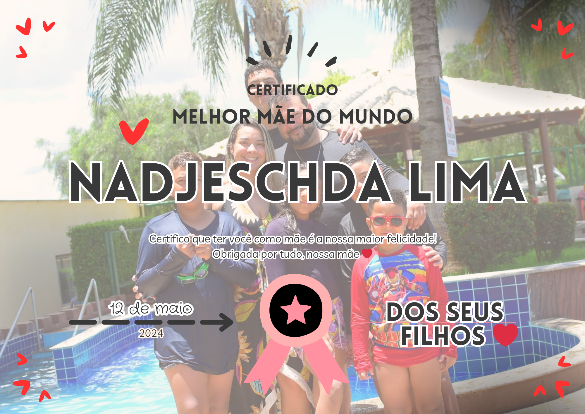
Um certificado que poucas conseguem (1/2)
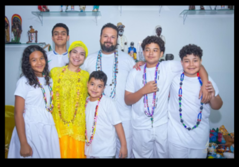
Como ser rica daquilo que não tem preço? Você sabe..(2/2)
A importância que você tinha com seu trabalho... você luta, você batalha, e se emociona quando recebe um elogio de um bom trabalho, quer evoluir sempre e sempre mais... (que lembro como chorou emocionada) e saber como seu trabalho é importante para você e satisfatório para mim.
Posso ficar horas e horas aqui falando de você... porque foram anos de entrega, anos de dedicação... infelizmente houveram algumas perdas, mas sabemos que nada é por acaso e você sabe disso, afinal sua religião te mostra isso, te deixa forte e brilhante... como o dia que você se sentiu realizada ao fazer sua coroação, que foi um dos dias mais importantes e emocionantes para você...
Quando você estava sozinha no escuro e eu segurando suas mãos... eu apenas fiz você lembrar de quem você é... a menina que sempre foi forte, corajosa, que é uma, mas nunca está só... Você tinha razão quando falou que foi uma loucura um estádio lotado com tantas pessoas nós nos encontrarmos, mas eu sei o que eu queria... e sei que você estava lá e pensando o tempo todo em mim...
...seja no bom dia querendo saber se você dormiu bem... ou se almoçou direito... se sentiu "dump" por comer algum doce diferente... ou se está vestindo aquela camisola vermelha que sempre pensa em mim, pois uma coisa eu fiz, faço e sempre vou fazer... te elogiar... não só pela beleza, mas por todo o conjunto... mulher, mãe, amiga, parceira, companheira, "coach" e médica particular (por sinal preciso fazer um check-up, quando podemos marcar?).
Quando você aceitou viver aquele déjà vu comigo te buscando... algo mudou em você em relação à minha pessoa, ficou nítido, seu olhar mudou... sua fala, seus gestos, tudo ficou diferente... e adivinha... até aquele momento eu não tinha intenção nenhuma de querer você... mas sabe o que aconteceu? Eu me apaixonei de novo... fiquei encantado com aquela menina brincalhona, assustada, um pouco comilona...
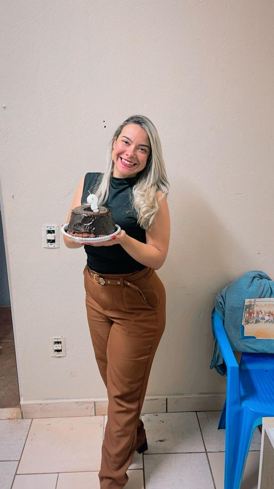
A alegria por perceber o quanto era querida (1/3)
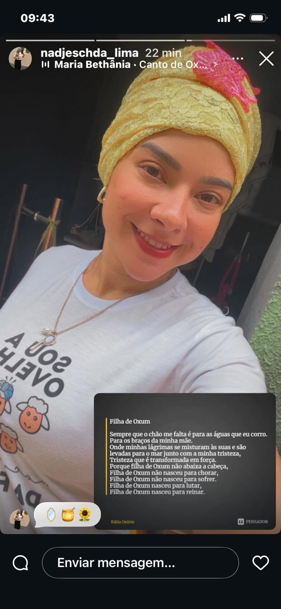
A beleza que só uma filha do ouro pode ter (2/3)
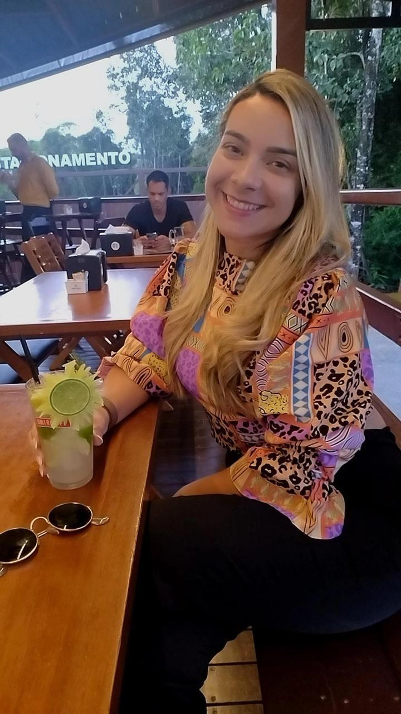
O sorriso que sempre me reconquistou (3/3)
...músicas que contam a minha história, a sua história... mas todas contam a nossa história, mesmo que você tente colocar outros personagens, a história é nossa.
Não sou de acreditar em destino... por isso eu acho que me apaixonei novamente por você... você nunca me deu esperanças... mas você nunca escondeu que ainda sente algo por mim, sua confusão deixava isso claro... primeiro a sensação de estar fazendo coisas erradas, depois a confusão por me ver uma noite depois de tanto tempo... e por último o cancelamento do casamento... se isso não tivesse acontecido eu não me apaixonaria de novo...
Quando te busquei na parada... fiz exatamente o que seu coração me pediu para fazer, te dei o que faz os seus olhos sorrirem, pois isso era o que estava faltando naquele momento... a leveza do nosso amor.
Admito que fiquei muito admirado após nosso almoço, você teve todas as chances de sair e ir para o escritório... porém preferiu ficar ali do meu lado... aquilo mostrou o quanto você estava mudada comigo... e quando você mencionou do tático que estava juntando a gente novamente... você estava mostrando o quanto aquele sentimento ainda está vivo em você...
Não me equivoquei quando me chamava de amor no mercado... pois como nosso amor sempre foi, natural e leve... e no meio da sua sala quando me entregou o copo d'água, mencionando o quanto o filho (Nicolas) se parece com o pai (eu), você me olhou com aquele brilho dourado de uma autêntica filha de Oxum tem... e peguei na sua mão... eu sentia o seu coração batendo mais acelerado que o normal, quando me aproximei você ficou vermelha... mas o destino quis nos acalmar fazendo os meninos aparecerem... e não adianta disfarçar, você ficou com um olhar de boba quando eles vieram me abraçar, você sentiu também o amor que eles sentem por mim e viu o quão grande ele é.
Então eu não estou te pressionando, nem tenho essa vontade, pois você sabe que eu não gosto de nada forçado, mas pensa comigo... por que deixar esse amor tão lindo trazer tanta confusão para duas pessoas?
Eu admito, não sou o Fernando que você conheceu... tem muito dele em mim ainda, mas tem muito mais que eu quero te mostrar... quero que comigo você volte a sorrir com o olhar, tenha leveza no seu caminho e que juntos nós conseguiremos realizar os nossos sonhos de forma coesa, de forma concreta... eu não vou te falar nada, mas...
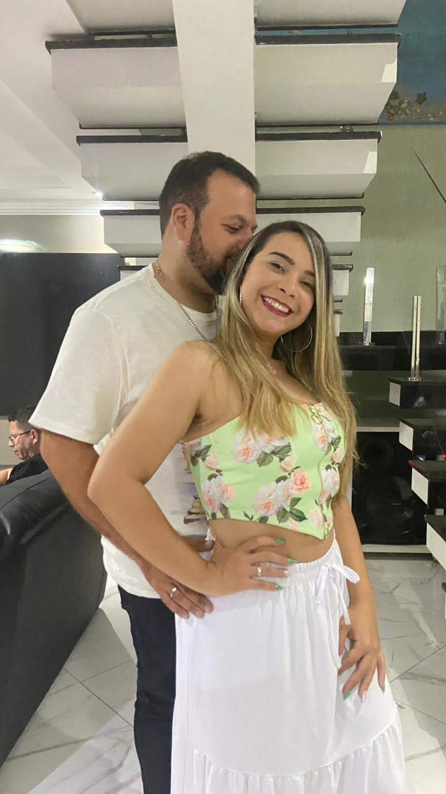
Dançando juntos pela primeira vez .
E se ainda tem dúvidas, responda essas perguntas, mas com o coração, e me diz que não sou eu que vem na sua mente para respondê-las...
você queria saber para que eu gravei? pra te mostrar que eu sou o unico que sei como trazer esse sorriso ao brilho. Eu te amo!
Acho que acabou o meu desabafo...